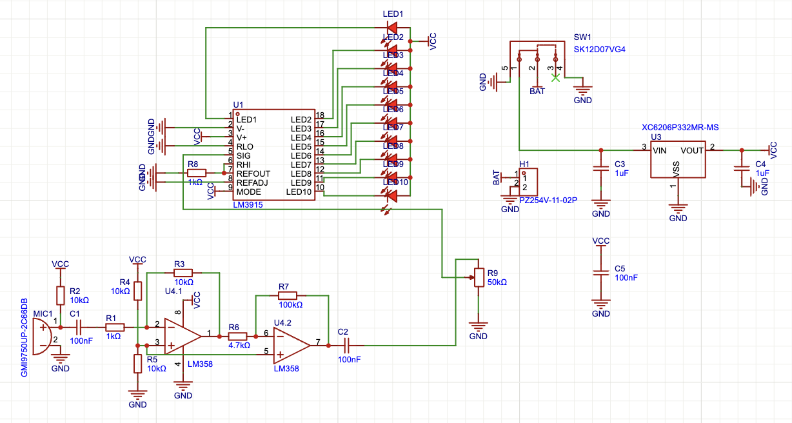

RoboMaster: A Retrospective Look
Before I knew I wanted to do RTL, I was on the electrical team for Purdue RoboMaster, drawing schematics and laying out PCBs for the team’s combat robot. I made three boards. One got fabricated, soldered and tested. The other two stopped at a finished layout.
01 · Audio visualizer
LM358, LM3915, fabricated
This was the onboarding project, and although this was not too challenging (since we had all those mentors and guides on how to do it, step by step), this was the one that taught me the most about schematic design, circuits, and PCBs. Two LM358 op-amp stages amplify a microphone 45×, and an LM3915 drives a 10-segment LED bar from that signal.


02 · Armor power system
layout only
This was the rechargeable power for the robot’s armor plates, my first personal creation. The plates take hits and have to keep reporting them, so this board powers them without running a harness back to the main battery.
The first MVP was to make the board rechargable, but I implemented the ESP32 along with the LEDs for power tracking (high → mid → low = green → orange → red, with blue = charging).
There was no mentor, no guide, no tutorial, only me and a bunch of datasheets I got dumped on. But hey it was fun!
| charging | TP4056 |
| regulation | TPS63002 buck-boost |
| monitoring | ESP32 |
| protection | MOSFET + Zener |
I designed and routed it, then the team stopped needing it. That’s kinda.... idk (actually the team lead did encourage me to send it to the factory, but due to some export control issues we couldn’t source PCBs from China, which are dirt cheap, and I was too lazy to order and solder everything, so yeah).


03 · Projectile charger
layout only
Charges the fluorescent projectiles so they glow under the arena’s UV lights, which lets the referee system track them. The layout is done but it was never fabricated (same reasons as above).


So What?
Although PCB didn’t end up becoming my main interest, I still learned a lot. This was my first time seeing my design alive, a rite of passage for an engineer.
A design isn’t done when the schematic is done. On the audio visualizer, the footprints were wrong and the first revision didn’t work, and I only found out by probing it. Me and my mentors spent so much time measuring everything, part by part, trying all different techniques, from thermal vision to solder bridge (I don’t know what it’s called but it’s when you put a whole bunch of solder to bridge the gap between the traces or shorted components).
AND IT’S TURNED OUT THE CHIP WAS COOOOOOKED. WE WASTED 4 HOURS. JUST FOR THE CHIP TO BE COOKED.
But yeah, this really gave me insights into debugging, which was the most crucial part before any design could truly work, and the patience going into each session like this. I carry this mindset all the time going into designing and verifying RTL code. And it was really fun learning from them! That’s the best part for sure.
By the time these boards were finished I was already more into RTL than PCBs, so I never wrote them up properly. The schematics and layouts above are all there is.
I have to say: this was one of my most locked in periods ever. Was it to farm projects, build connections, and boost resume? Was I this locked in just to get a job?
Yes.
That was my initial plan. But the process of learning, designing, building, and connecting with my mentors was so fun, I was just doing it for the love of the game. Other reasons stopped mattering.
And through the club, I met so many cool people. And I’m grateful for that.
Thank you Thomas (and Drew), my team leads, for enduring me and teaching me a lot along the way.